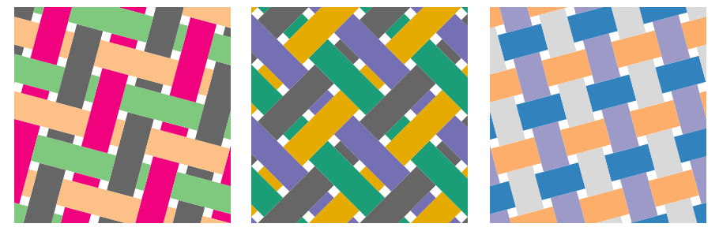

Welcome to MapWeaver! ☒
Using MapWeaver you can make tiled and woven maps to present complex multivariate data. The page takes a little while to load, which it is doing now in the background. While you wait, here's some explanation.
By tiling a map we can assign data from map areas to overlaid tiles, and use the tiles to present several attributes for each map area simultaneously. Tiles in each distinct position in the pattern carry different attributes so we can see all the data at once, but also know which data item is which in every map location.

MapWeaver offers a range of tiling options including some that give the appearance of woven material.

To see more examples, visit the repository for the weavingspace code that drives MapWeaver, where you will also find materials on the thinking behind these tools.